La Nación · Revista Lugares · diciembre 2024
Cambio de vida a los 55: el sueño gastronómico del pediatra del pueblo
“Hice tantos dibujos, pasé tantas horas soñando este lugar.”
Leer la nota en La NaciónCapitán Sarmiento · Buenos Aires
Cocina de fuegos
La historia
A los 13 años Carlos Más decidió que iba a ser médico. Durante décadas fue el único pediatra de Capitán Sarmiento: el que atendía a todos los chicos del pueblo, a cualquier hora. Todavía lo es.
Un día tuvo que frenar. Leyó, pintó, tomó clases de teatro. Y en esa calma que no esperaba empezó a llenar hojas con dibujos de un lugar que todavía no existía.
Lo empezó a levantar en plena pandemia, con maderas, chapas y muebles que ya habían tenido otra vida. Pasó noches enteras ahí adentro, solo, mirando cómo entraba la luz de la luna. Hoy lo lleva adelante con Marilina, sus hijos y el equipo de cocina. Dice que es como tener un hijo más.
“La vida sin sueños es una vida vacía.”
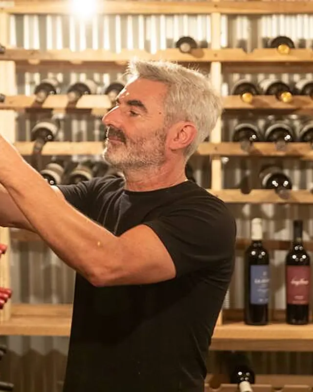
El lugar
Carlos lo quiso así: que desde la calle no parezca lo que es, y que la sorpresa al entrar te haga querer quedarte.
Acá todo tuvo una vida antes. El piso es de madera recuperada y cruje al caminar. Las chapas del techo cubrieron un galpón de pollos. Las lámparas eran tolvas. Las tablas del mostrador son las mismas donde alguna vez se amasó el pan.
La mesa central fue torno de una panadería de La Matanza durante 70 años. La trajo la hija del panadero, que quería ver con sus propios ojos dónde iba a quedar el lugar de trabajo de su padre. Hicieron falta seis personas para bajarla.
Y debajo del salón está la cava, donde se baja a elegir el vino de la noche.
La cocina
La cocina está abierta y se ve desde cualquier mesa. “No ocultamos nada”, dice Carlos. La carta cambia todas las semanas, según lo que haya fresco.
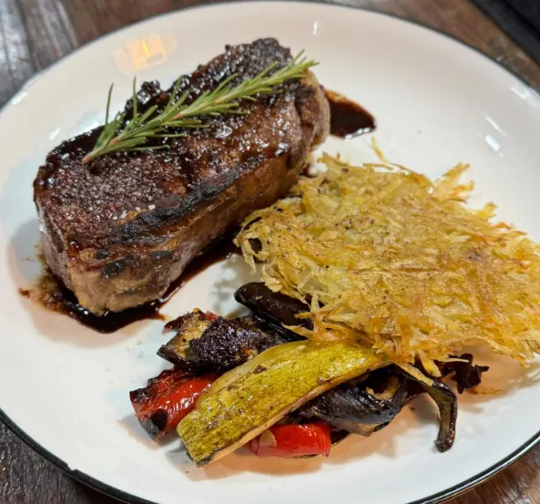
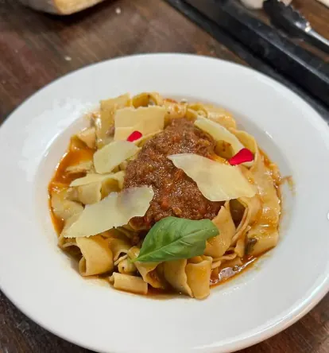
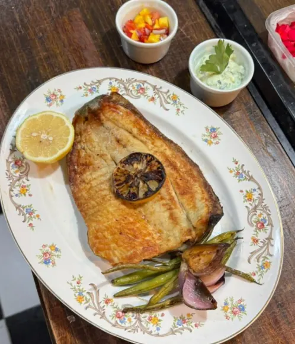
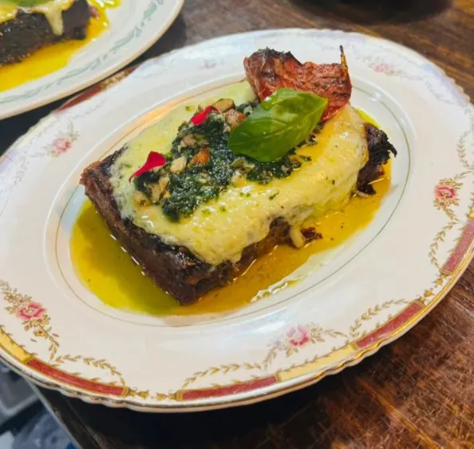
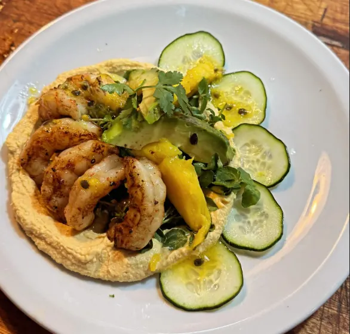
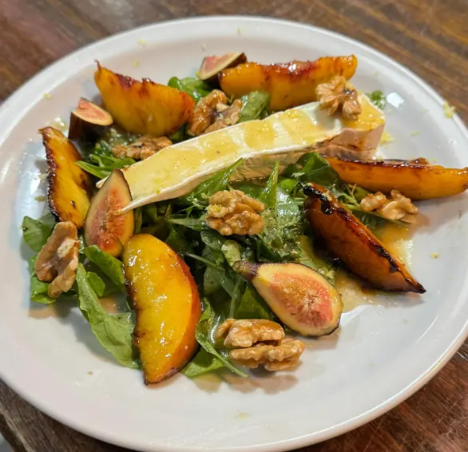
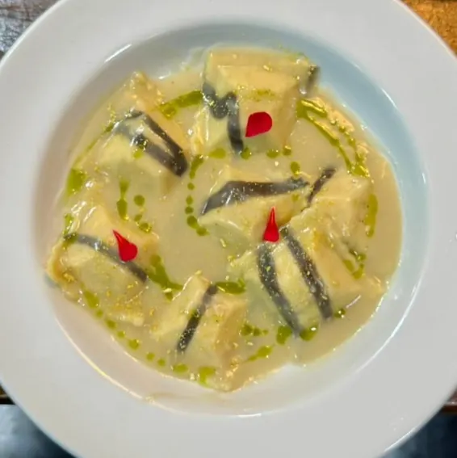
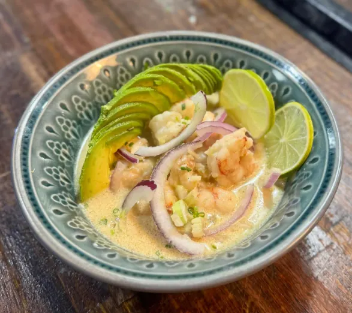
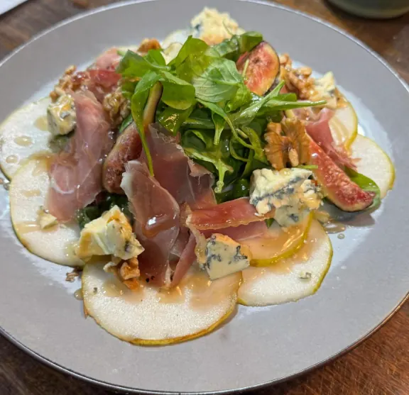
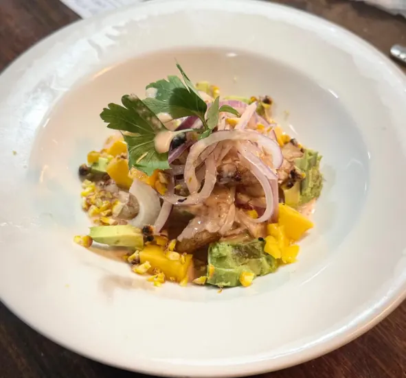
Lo contaron ellos
La Nación · Revista Lugares · diciembre 2024
“Hice tantos dibujos, pasé tantas horas soñando este lugar.”
Leer la nota en La NaciónPerfil · julio 2026
Un galpón hecho con materiales recuperados y una cocina que respeta el producto.
Leer la nota en PerfilSemanario Argentino · El Argentino Gourmet · octubre 2024
Un viejo galpón por fuera, la mesa compartida y un menú por pasos con maridaje.
Leer la nota en Semanario ArgentinoEventos empresariales
Un galpón con historia, una mesa larga y una cocina a la vista. El lugar para agasajar a un cliente, celebrar un buen año o sacar al equipo de la oficina, con un menú a los fuegos pensado para el grupo.
Todos en la misma mesa, con la cocina trabajando a la vista.
Una mesa chica, bajo tierra, para los invitados que importan.
Reunión, almuerzo largo y sobremesa, lejos del ruido.
Cena + noche Próximamente
Estamos armando la experiencia completa con alojamiento a pocos minutos: cena en La Mancha, noche en el pueblo y desayuno de campo, en una sola reserva.
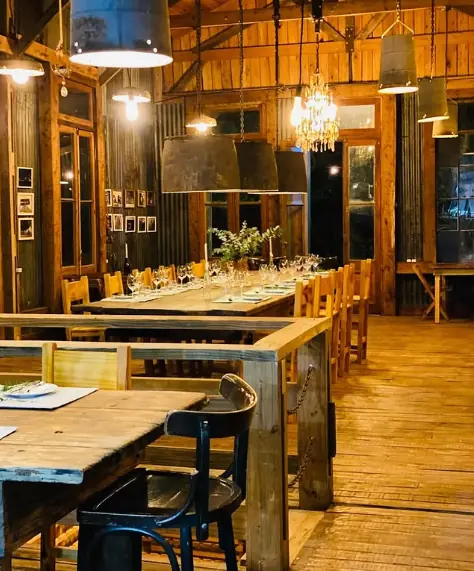
La escapada
Capitán Sarmiento queda sobre la Ruta 8, a 33 km de San Antonio de Areco. Es el pueblo que todavía no se llenó.
Salís. Panamericana, ramal Pilar y Ruta 8.
Llegás al pueblo. Una vuelta por la plaza antes de cenar.
Te sentás frente al fuego. La mesa es tuya toda la noche.
Sobremesa. Acá se defiende a ultranza: nadie te levanta la mesa.
4,9 ★ en Google · 40 reseñas
“Vinimos de Buenos Aires y valió la pena.”
“Un espacio para disfrutar sin apuro y sentirse como en casa.”
“El ambiente rústico pero de muy buen gusto, atendido por sus dueños.”
Abrimos pocas noches y las mesas se quedan toda la velada, así que conviene reservar.